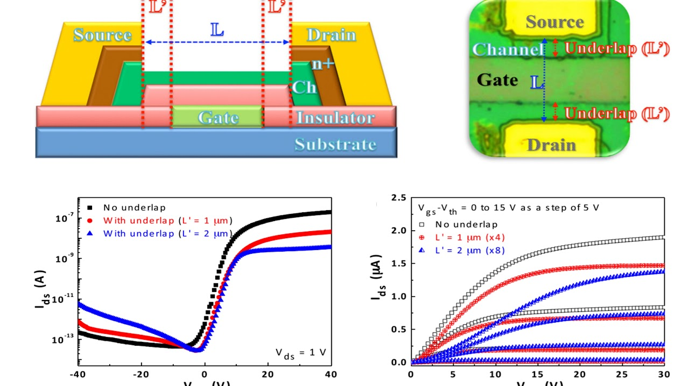

2015Before Gachon University
[1] Photosensitivity enhancement in hydrogenated amorphous silicon thin-film phototransistors with gate underlap, Applied Physics Letters, November (2015)
Junyeon Kwon, Seongin Hong (Co-1st), Young Ki Hong, Sungho Lee, Geonwook Yoo, Youngki Yoon, Sunkook Kim
